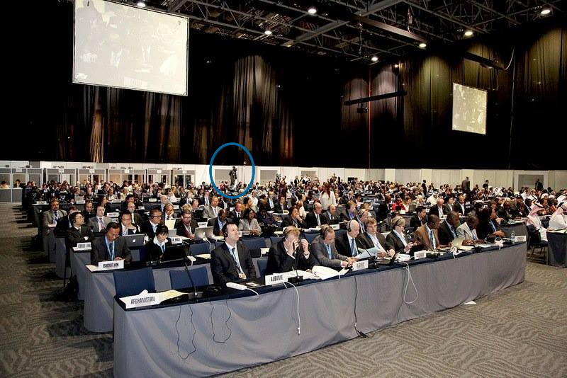

The History of Wave®
Wave was founded in 2010 with an audacious goal. Transform access to internet from an afforded privelage to a free and inalienable birth right. This charter later became the acronym I.a.a.R (Internet as a Right). Sir Michael Moritz (Google's first investor) even responded to this innitiative saying "Bravo Wave, I admire - Pluck & Spirit". Then in Westminster, London, 2011 - Wave met with Thomas Power (Sir Alan Sugars former apprentis and husband to Penny Power OBE). Mr Power added value by explaining his 10 year personal journey from someone who had to think from within an institution, to someone who has developed himself to be able to think as, and from within a network. Then in 2012 Wave visited the World Conference of International Telecommunications (WCIT) 2012 at the Trade Center in Dubai, which was was hosted by the UN's International Telecommunications Union (ITU) and attended by 147 world leaders. This ITU meeting attempted to railroad world leaders into signing an international treaty which would prolong interhnet as an afforded, regulated privelage and hinder internet from evolving into a free, human right. Google boycotted the event online, campaigning to expose the event as a 'secret' shadow government meeting while the hacking group anonoymous reportedly hacked the event to try to sabbotage and stop it. Simultaniously the UK and EU's elected "representatives" refused to acknowledge receipt of the Wave® charter nor confirm it would be included in this "open debate". So Siôn (a British Public Servant still in Oath (Ex British Forces & Life Member of the Royal Signals Regiment) and representative of a Trust and Charter of 50+ British Defence Telecommunications Professionals) flew to Dubai and gained access to the debate by using its own promotion material as a reminder that it was a "public open debate" and claiming to be a 'walk-in off the street/ member of the public'. Legally the WCIT was a public open debate, since the ITU placed a stage in the hallway for attendees to present ideas to other attendees. And people were free to walk in off the steets. However Dubai's affluent (air-conditioned) streets surrounding the Trade Center were heavily policed and thousands of miles from western activists and protestors, so public walk-in's off the street, were by design, very unlikely. After gaining access it was further evident that this "open public debate" was actually empty hallways and stages, since all the attendees sat inside a soundproof and guarded room, talking to each other by whispering into microphones and listening to each other through earpieces. Their tables all positioned to face the ITU Secretary General and his Saudi-Arabian associates which sat a few feet higher on a stage, with their hands hovering on buzzers ready to mute infavourable speakers. Since Wave® was not a member state like the Regime's and major Telco's in attendance, its Founder & CEO was not afforded any benefits or privelages of membership, which happended to include: a headset (to listen to what was being said), a microphone (to speak in the "open & public" debate, using their prefered means of communication), nor even a seat to sit down (despite tables and chairs being vacant) and not even the cups of "free" water (brought to the tables of elected representatives of all member-states, on command). In order to participate in this "open public debate", members of the public (Sion only) had to stand at the back of the humid room, with nothing larger than a bottle of water (or security would refuse entry), facing backs of heads, without a voice, reading transcripts of what was being said from a neck straining/ dimly lit projector screen hanging form the ceiling. It's safe to presume this was also, all by design. This continued for 10 hours a day, for almost 2 weeks!

On the final days, Siôn spoke face to face with the world leaders, highlighting the unlawful tactics employed by the ITU to prevent any public oversight and notifying them that the Wave® Whitepaper was actively witheld from them, before handing a physical copy to each attendee. During a mid-conference TV interview with Terry Krammer (the US White House's Technology Advisor), it was said that the "presentation of a new document" (Wave®), "caused a great deal of constination in the room" and "hijacked the debate". Wave® sent its report back to the British Government, insisting the elected EU "reprenstatives" were not representing (not even Britains defence communications community) and that they were not be trusted, futher advising that the UK Government interject before Great Britain is subjected to a highly unlawful and unconstitutional international treaty. David Cameron himself responded by questioning, rejecting and withdrawing the UK from the EU's railroad attempt succeeded. The US Government and then a majority of other Member States also followed suite and withdrew from signing the treaty. Had our resident British Government Public Servant not been in attendance, maintaing his Oath, interjecting and ensuring constitutional rights were upheld, this secret government meeting would have succeeded in forging an unlawful international treaty which would have hindered any chance of internet becoming a free and inalienable birth right. On the day of signing the treaty, which almost every newly informed member state rejected, the impact Wave® had on the conference was an evident success. The international treaty did not gain the signatures needed and the entire agenda ended that day in that room. Shortly afterwards the ITU Secretary General resigned and UK Citizens voted to leave the EU. Since the Wave® Whitepaper was presented at the WCIT 2012 and later publication online, recipients and attendees of the event have partnered with major companies such as Google, Virgin, Vodafone and Facebook to launch their own free internet innitiatives, although many did not succeed in overcoming the technical challenges and subsequently no longer exist today.
Wave® has maintained its course and made considerable and notable advances towards fulfilling its charter. By 2014 Siôn and his defence communications community had invested and loaned more than $1million USD to researching and developing Wave®. The entire operation also moved from Britain to Casa De Campo: a 5* Golf Resort in the Caribbean. Then again to a custom built campus on the northern east coast of the island, the Scottish Bay. Wave® also gained its biggest single investment of more than $100,000 USD in 2015, moved to a more strategically valuable campus on the Scottish Bay and upgraded its security from two (3-time decorated) private military security contractors to a small team of dedicated, unifomed 'park rangers'. After receiving an email from Google's first investor - Sir Michael Moritz (which read "Bravo, I admire, Pluck & Spirit"), Google's Chairman and CEO at the time (Eric Schmidt) started to endorse Wave® posts on Social Media, which was followed shortly afterwards with Google's Patents division approaching Wave® and awarding $2Million of security patents aquired from Motorola©. An employee of Google's Secret division (Team X) also visited the Wave® campus (in the Caribbean) and awarded Wave's spins-off project (Caribbean Communications Unit) an island wide contract for Google Loon Balloon recovery, authorising a budget for drones, a helicopter and full Google Loon Air Traffic Control Access. Siôn was also invited to work at Apple in 2017 after developing a feature for Wave® which identified Apple's covert bypassing of firewalls to monitor iMac usage. Today Wave® is producing a wide range of its own technology products using hardware manufactured by Sony® at their factory in South Wales. The products are operated by the new Wave® Operating System: WaveOS™. Wave® has also re-structured itself to became one of four subsidiaries of a private trust. The other three subsidiaries include: Caribbean Communications Unit (CCU), the Internet as a Right (IaaR) and the Scottish Bay;
 Make it Wave LtdSubscription-Free Internet & IPTVThe mission of Wave® is to produce a simple, free (or low cost) solution for making internet access free for the general public. Wave® operates within a strict scope, focusing on the free internet software & products, supporting technical documents and service/ support. The day to day work at Wave® is largely perfection and upkeep of the software, source code, supporting technical documents and its overal presentation. The goal is to reach the largest possible audience in the shortest period of time and maintain a stable and dependable network. Siôn Buckler is the Founder & CEO of Wave®.
Make it Wave LtdSubscription-Free Internet & IPTVThe mission of Wave® is to produce a simple, free (or low cost) solution for making internet access free for the general public. Wave® operates within a strict scope, focusing on the free internet software & products, supporting technical documents and service/ support. The day to day work at Wave® is largely perfection and upkeep of the software, source code, supporting technical documents and its overal presentation. The goal is to reach the largest possible audience in the shortest period of time and maintain a stable and dependable network. Siôn Buckler is the Founder & CEO of Wave®.
Internet as a Right Inherent & InalienableInternet Access X as a Right (aaR) is a new group of acronyms introduced by Sion Buckler in 2018. Examples include Education as a Right (EaaR) and more recently Internet as a Right (IaaR). Access to Internet, in comparison to access to education, has now been deemed a basic human right by the United Nations. This is to say that access to internet and/or internet itself, is inherent and inalienable and not a privilage or benefit of membership to any given society/ regime. The flaw in this ideology becoming a reality is the fact internet is still a paid service and so it continues to be a benefit of sorts. Wave and Free Internet Access effectiely solves this dilemah and ensures access to internet becomes truely inherent and inalienable.
 Caribbean Comms Unit Society & Infrastructure Defence ForceCaribbean Communications Unit (CCU) was formed to produce, maintain and defend a series of mesh-networked, solar-powered, geodesic equipment rooms operated by the Wave® Operating System: WaveOS™. The result is the worlds first free internet and energy infrastructure level solution. The day to day work at CCU involves production, installation and ongoing maintenance of the Neo Dome® equitment rooms. The solution is also supported with technical documents and blueprints which enable the Neo Dome® solution to be easily re-produced by architects, builders and engineers almost anywhere else in the world. Siôn Buckler holds office as CCU's Head of Defence.
Caribbean Comms Unit Society & Infrastructure Defence ForceCaribbean Communications Unit (CCU) was formed to produce, maintain and defend a series of mesh-networked, solar-powered, geodesic equipment rooms operated by the Wave® Operating System: WaveOS™. The result is the worlds first free internet and energy infrastructure level solution. The day to day work at CCU involves production, installation and ongoing maintenance of the Neo Dome® equitment rooms. The solution is also supported with technical documents and blueprints which enable the Neo Dome® solution to be easily re-produced by architects, builders and engineers almost anywhere else in the world. Siôn Buckler holds office as CCU's Head of Defence.
Scottish Bay SocietyContingent SBA/ British Protectorate The Scottish Bay in the Caribbean is a 70km coastline in the Caribbean where the worlds first free internet service will be showcased. CCU will provide maintenance and defence for the physical network, while Wave sources the Software, products and services needed. The IaaR is working with local authorities explore ways to make this new free internet service an inherent & inalienable right for residence of the Scottish Bay. Siôn Buckler holds office as a military strategist until his term as a British Crown Public Servant expires in 2024. Learn more
In 2018 Wave® migrated its free internet and energy software soltuion to a free and open-source model. Wave® also incorporated as a for-profit company, projecting $100Million+ turnover a year. A mere fraction of the revenue expected to pass between advertisers and internet service providers using Wave® technologies, from as soon as 2020. Global display adversing expendature has now exceeded $200Billion (and continues to climb each year). While cost (and demand) of connecting the worlds unconnected, continues to grow. Wave® acts as a bridge between the two, improving ad targeting for advertisers using IoT ad-reinsersion techniques while simultaniously subsidising the cost of connectivity by up to 100%. And with no more cost barriers to internet connectivity, the unconnected will finally become connected. As of 2018 Wave® released version 0.0.4 of WaveOS™. This is a reverse engineered version of the Software System Operating the in-house prototype. The software has been re-written as a script for quick product assembly, installation and network growth. It can install to a device and configure itself fully-automatically (plug & play). The software is also able to self-update. With the next release, WaveOS™ will help to put Wave® in every home, quickly and globally. Wave® is now holding a Series A Funding Investment Round (exchanging 15% equity in order to raise a further $2.5Million USD).
In April 2019 version 0.5.0 of WaveOS™ was released. This is a clone of the Software System Operating the in-house prototype. The solution features many changes including game station and virtual gamepads, a free iptv service and more.